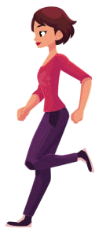
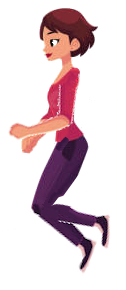
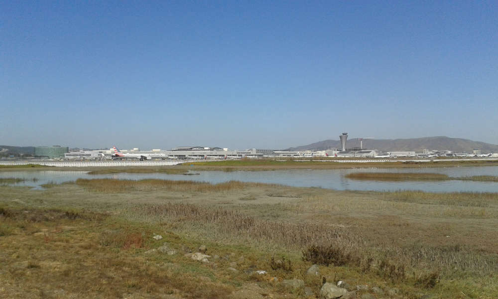
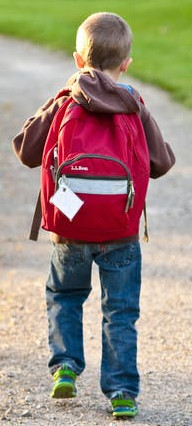
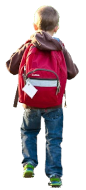
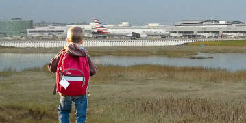

Gimp
Gimp allows editing images.
Gimp was used to change the following image.

Into:

Gimp was used to combine the following images.


Remove the boy background and add to the airport:


For Windows:
https://www.gimp.org/downloads/
For Ubuntu:
Install Gimp using Synaptic or command line.
sudo apt-get install gimp
For some types of images, the following may be needed to install
Ubuntu Restricted Extras using Synaptic. Select Settings/Repositories.
Then select "Software restricted by copyright or legal issues(multiverse)".
Search for "ubuntu-restricted-extras" and select it. Then Apply.
Use command line:
sudo add-apt-repository multiverse
sudo apt install ubuntu-restricted-extras
Open an image file in Gimp.
Vector images can be edited using Inkscape.
Image Explanation
For Ubuntu:
- Start Gimp using Activities and enter Gimp in the "Type to search box".
- If Gimp is not available, install Gimp
Use one of the following to open an image file (.jpg, .mp3, .mp4, .png, .webm, etc.).
- Select File/Open, then search for the image.
- If a folder is showing the image filename, press the mouse button down on the image,
move the mouse to Gimp, and then release the mouse button.
To save an image, use menu File/Overwrite or File/Export As.
There are many file image formats. The most common for Gimp are jpg, png, gif.
Some take more disk space, and some look better. Try exporting as different formats
to see the differences.
If you want to keep the history of edits, or things like layers, then do Save or Save As
to save the .xcf file. This is a file that Gimp keeps to be able to start editing from
the previously performed edits. This file is not an image file that other programs can
read.
Change Image Size
Get Part of an Image
- Open a file in Gimp.
- Select Tools/Selection Tools/Rectangle Select
- Select an area on the image by clicking at a location, pressing the mouse
button down and moving the mouse, then releasing the button
- Select Image/Crop to Selection
- Save the image file in Gimp.
- This shows that this dog head was
from this image 
Draw on an Image
- Open a file in Gimp.
- Select Tools/Paint Tools to select Pencil, Paintbrush, Eraser or other tools.
- To select a color to paint, select Windows/Dockable Dialogs/Colors. Clicking
on different colors will choose the color that will be used to draw on an image.
- Another very important tool for matching colors is to select Windows/Toolbox and
pick the tool that looks like an eyedropper, to just use Tools/Color Picker. Then
click on a point in the image.
This is how the left eye winking dog was created
from this image.
Colors from parts around the eye were drawn in other pixels.
- Select Windows/Tool Options to choose how big the pencil or brush are.
Copy Part of Image
- Zoom in to part of image to change using "Shift +" or "Shift -"
- Use Tools/Selection Tools/Free Select or Fuzzy Select to select region
- Select part of an image
- Select menu Edit/Copy
- Select menu Edit/Paste
- Move the copy to the desired location.
- Move the cursor outside of the selected area and click to anchor to the image
Rotate Part of Image
- Zoom in to part of image to change using "Shift +" or "Shift -"
- Use Tools/Selection Tools/Free Select or Fuzzy Select to select region
- Select Tools/Transform Tools/Rotate
- Enter an angle and click Rotate to apply it.
- While it is still selected, click on the move icon on the left hand side of the window (4 arrows)
- Move the selected area to the desired location.
- Move the cursor outside of the selected area and click to anchor to the image
Layers
Layers can be used to work on parts of images. If the separate images are on
different layers, they can be selected and modified without modifying other images.
To keep the layers for editing in the future, the Gimp .xcf file must be saved.
- Select an area, then select menu "Edit/Copy Visible"
- Turn on the layer dialog using Windows/Dockable Dialogs/Layers"
- Select menu "Edit/Paste As/New Layer In Place". This creates a new layer.
- Clicking on the eyeballs of each layer shows what is on each layer in the main window.
- Make some layers visible using eyeballs. Use Image/Merge Visible Layers or Select Layer/Merge Down.
- Notice that selecting an area on one layer only selects what that layer contains.
Install "Gimp" using Synaptic or command line.
Image Explanation
Gimp can set the transparency of parts of the image. It can also remove frames when there are more
than what is needed.
Extract Frames
This shows how to manually extract frames. The frames can be also automatically
extracted using WinFF or ffmpeg.
Sometimes Gimp will display an error about an unknown file type. One solution is to use
WinFF or ffmpeg.
This example shows how the game/airport-data/BirdSource files were modified.
The source video was retrieved from https://www.pexels.com/search/videos/bird/.
- Use Crop to get a limited time in the video.
- Use Extract to see the frames/convert to jpg images.
- Manually view and scroll through images to see where the good frames are.
- Looks like starting at frame 62. A close ending frame is 103.
- 103-62=41.
- Get 8 frames using 41/8= every 5th frame, so 62, 67, 72, 77, 82, 87, 92, 97
Add Transparency
Transparency can be added to any image or photograph. It is easiest if the image
has one background color.
- Add transparency to bird using Gimp
- Select menu Tools/Selection Tools/By Color Select
- Click on sky.
- Select Layer/Transparency/Add Alpha Channel
- Select Edit/Clear
- Select menu Tools/Selection Tools/Rectangle select and select small area around image.
- Select size using Tool Options dialog
- Select Image/Crop To Selection
- Select File/Export As, then save filename as bmp?
- Set name to bird-0062-trans.bmp
- Do above process for all images (Use Close View to restart)
- Add transparency to bug/spider
- Use View/Zoom to make the image larger and easier to edit.
- Select Tools/Selection Tools and choose Rectangle Select, Fuzzy Select and
By Color Select
How to extract a person
This shows how BoyWalking.jpeg was converted.
- Select a small area that includes the person.
- Select menu Image/Crop To Selection. This reduces the image size from >100 KB to 40 kB.
- Select menu Layer/Transparency/Add Alpha Channel
- Select menu Tools/Selection Tools/By Color Select.
- If some part of the image includes part of the boy that needs to be kept,
use Add or Subtract Selections
For example, if color select was done first, select the rectangle selection tool and press
the Ctrl key before making the rectangular selection around the area you would like to keep.
- Click on a color and press the Delete key.
Clean up parts of an image
The Clone tool works well to blend patterns from one part of an image into another.
- Select a brush from Windows/Dockable Dialogs/Brushes
- Select the clone tool from Tools/Paint Tools/Clone
- Use Ctrl and click on an area to copy from
- Click or click and drag on the area to copy to
Square up image
Sometimes a picture taken by a camera will not have images that are rectangular,
and they should fit into a rectangular area.
A grid can be displayed using the following commands.
- View/Show Grid
- Image/Configure Grid
First delete the background so it will be easier to see what has moved.
- Tools/Selection Tools/Free Select
- Select/Invert
- Press Delete key.
- Image/Crop
Then transform the shape.
- Select All
- Tools/Transform/Perspective
- Use Shift + to zoom in to a corner
- Click and drag near the corner.
- Do all 4 corners
- Then do all 4 corners again
- Press Transform in the Perspective dialog.
- Image/Canvas Size
- Image/Merge Visible Layers
- Image/Crop to Content